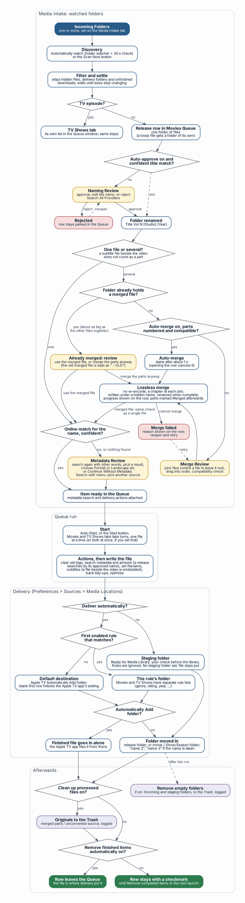

Media Metadata Manager Help
› User Guide
5. Media Intake in detail

The Intake pipeline, from the watched folder to delivery. Yellow boxes are the moments where M3 asks for your decision.
In this chapter
5.1 Settings reference
5.2 What happens, step by step
5.3 Lossless merge
5.4 Safety guarantees
5.5 Media Locations: where finished files go